Learning Module 8 Yield and Yield Spread Measures for Floating-Rate Instruments - Part 2: Yield Measures for Money Market Instruments
Volume 6: Fixed Income
Learning Module 8 Yield and Yield Spread Measures for Floating-Rate Instruments
Part 2/2: Yield Measures for Money Market Instruments (PDF Pages 207–220)
Tập 6: Thu nhập Cố định (Fixed Income)
Học phần 8: Các Thước đo Lợi suất và Chênh lệch Lợi suất đối với Công cụ Lãi suất Thả nổi (Yield and Yield Spread Measures for Floating-Rate Instruments)
Phần 2/2: Các Thước đo Lợi suất đối với Công cụ Thị trường Tiền tệ (Trang PDF 207–220)
YIELD MEASURES FOR MONEY MARKET INSTRUMENTS
CÁC THƯỚC ĐO LỢI SUẤT ĐỐI VỚI CÔNG CỤ THỊ TRƯỜNG TIỀN TỆ (YIELD MEASURES FOR MONEY MARKET INSTRUMENTS)
3
3
calculate and interpret yield measures for money market instruments
tính toán và diễn giải các thước đo lợi suất đối với các công cụ thị trường tiền tệ
Money market instruments are debt securities with original maturities of one year or less. There are many types, including overnight sale and repurchase agreements (repos), bank certificates of deposit, commercial paper, Treasury bills (government securities issued with a maturity of one year or less), bankers’ acceptances, and time deposits based on market reference rates. There are mutual funds that invest solely in eligible money market securities, known as money market mutual funds, which are sometimes considered as an alternative to bank deposits.
Các công cụ thị trường tiền tệ (money market instruments) là các chứng khoán nợ có kỳ hạn gốc từ một năm trở xuống. Có rất nhiều loại, bao gồm thỏa thuận bán và mua lại qua đêm (overnight sale and repurchase agreements – repos), chứng chỉ tiền gửi ngân hàng (bank certificates of deposit), thương phiếu (commercial paper), tín phiếu Kho bạc (Treasury bills – chứng khoán chính phủ được phát hành với kỳ hạn từ một năm trở xuống), hối phiếu được ngân hàng chấp nhận (bankers’ acceptances), và tiền gửi có kỳ hạn (time deposits) dựa trên lãi suất tham chiếu thị trường. Có những quỹ tương hỗ chỉ đầu tư vào các chứng khoán thị trường tiền tệ đủ điều kiện, được gọi là quỹ tương hỗ thị trường tiền tệ (money market mutual funds), đôi khi được xem là một lựa chọn thay thế cho tiền gửi ngân hàng.
There are several important differences in yield measures quoted for money market instruments versus bonds:
Có một số điểm khác biệt quan trọng trong các thước đo lợi suất được yết cho các công cụ thị trường tiền tệ so với trái phiếu:
1. Bond yields-to-maturity are annualized and compounded. Yield measures in the money market are annualized but not compounded; the return on a money market instrument is stated on a simple interest basis.
1. Lợi suất đáo hạn của trái phiếu (bond yields-to-maturity) được chuẩn hóa theo năm (annualized) và tính lãi kép (compounded). Các thước đo lợi suất trên thị trường tiền tệ được chuẩn hóa theo năm nhưng không tính lãi kép; tỷ suất sinh lợi trên một công cụ thị trường tiền tệ được biểu thị trên cơ sở lãi đơn (simple interest basis).
2. Bond yields-to-maturity usually are stated for a common periodicity for all times-to-maturity. Money market instruments with different times-to-maturity have different periodicities for the annual rate.
2. Lợi suất đáo hạn của trái phiếu thường được biểu thị theo một định kỳ (periodicity) chung cho mọi thời gian đáo hạn. Các công cụ thị trường tiền tệ có thời gian đáo hạn khác nhau sẽ có các định kỳ khác nhau cho lãi suất hàng năm.
3. Bond yields-to-maturity can be calculated using standard time-valueof-money analysis. Money market instruments are often quoted using non-standard interest rates and require different pricing equations than those used for bonds.
3. Lợi suất đáo hạn của trái phiếu có thể được tính toán bằng cách sử dụng phân tích giá trị thời gian của tiền tệ tiêu chuẩn. Các công cụ thị trường tiền tệ thường được yết giá bằng các mức lãi suất phi tiêu chuẩn và đòi hỏi các phương trình định giá khác với những phương trình được sử dụng cho trái phiếu.
In general, quoted money market rates are either discount rates or add-on rates . Although market conventions vary around the world, commercial paper, Treasury bills, and bankers’ acceptances often are quoted on a discount rate basis. Bank certificates of deposit, repos, and market reference rate indexes are quoted on an add-on rate basis. While discount rate usually means “interest rate used to calculate a present value,” in the money market, the discount rate involves an instrument for which interest is included in the face value of the instrument. An add-on rate, in contrast, involves interest that is added to the principal or investment amount. Some examples will clarify this point.
Nhìn chung, lãi suất thị trường tiền tệ được yết giá là lãi suất chiết khấu (discount rates) hoặc lãi suất cộng thêm (add-on rates). Mặc dù các quy ước thị trường khác nhau trên khắp thế giới, thương phiếu, tín phiếu Kho bạc và hối phiếu được ngân hàng chấp nhận thường được yết trên cơ sở lãi suất chiết khấu. Chứng chỉ tiền gửi ngân hàng, hợp đồng mua lại (repos) và các chỉ số lãi suất tham chiếu thị trường được yết trên cơ sở lãi suất cộng thêm. Mặc dù lãi suất chiết khấu (discount rate) thông thường có nghĩa là “lãi suất được sử dụng để tính giá trị hiện tại”, nhưng trên thị trường tiền tệ, lãi suất chiết khấu liên quan đến một công cụ mà tiền lãi đã được bao gồm trong mệnh giá của công cụ đó. Ngược lại, lãi suất cộng thêm liên quan đến tiền lãi được cộng thêm vào số tiền gốc hoặc số tiền đầu tư. Một số ví dụ sẽ làm rõ điểm này.
Equation 2 is the pricing formula for money market instruments quoted on a discount rate basis.
Phương trình 2 là công thức định giá cho các công cụ thị trường tiền tệ được yết trên cơ sở lãi suất chiết khấu.
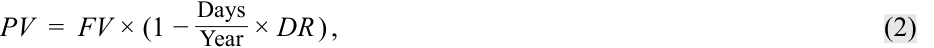
where
PV = present value, or the price of the money market instrument
trong đó:
- FV = the future value paid at maturity, or the face value of the money market instrument
Days = the number of days between settlement and maturity
-
Year = the number of days in the year
-
DR = the discount rate, stated as an annual percentage rate
-
$PV$ = giá trị hiện tại (present value), hay giá của công cụ thị trường tiền tệ
-
$FV$ = giá trị tương lai (future value) được trả khi đáo hạn, hay mệnh giá (face value) của công cụ thị trường tiền tệ
-
$\text{Days}$ = số ngày giữa ngày thanh toán (settlement) và ngày đáo hạn (maturity)
-
$\text{Year}$ = số ngày trong năm
-
$DR$ = lãi suất chiết khấu (discount rate), được biểu thị dưới dạng lãi suất phần trăm năm
Suppose that a 91-day Indian Treasury bill (T-bill) with a face value of INR10 million is quoted at a discount rate of 3.45% for an assumed 360-day year. The price of the Indian rupee T-bill is INR9,912,792.
Giả sử một tín phiếu Kho bạc Ấn Độ (T-bill) kỳ hạn 91 ngày có mệnh giá 10 triệu INR được yết ở mức lãi suất chiết khấu 3,45% cho một năm giả định 360 ngày. Giá của tín phiếu Kho bạc bằng đồng rupee Ấn Độ này là 9.912.792 INR.
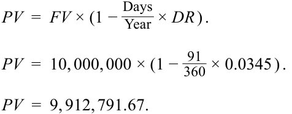
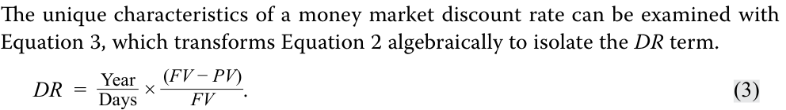
The first term, Year/Days, is the periodicity of the annual rate. The second term reveals the odd character of a money market discount rate. The numerator, FV – PV , is the interest earned on the rupee T-bill, INR87,208 (= 10,000,000 – 9,912,792), over the 91 days to maturity. However, the denominator is FV , not PV . In theory, an interest rate is the amount earned divided by the investment amount ( PV ), not the maturity value ( FV ), which includes the earnings. Therefore, by design, a money market discount rate understates the rate of return to the investor, and it understates the cost of borrowed funds to the issuer. That is because PV is less than FV if DR is greater than zero.
Các đặc điểm độc đáo của lãi suất chiết khấu thị trường tiền tệ có thể được xem xét thông qua Phương trình 3, biến đổi đại số Phương trình 2 để tách riêng số hạng $DR$:
Số hạng đầu tiên, $\text{Year}/\text{Days}$, là định kỳ (periodicity) của lãi suất hàng năm. Số hạng thứ hai cho thấy đặc tính kỳ lạ của lãi suất chiết khấu thị trường tiền tệ. Tử số, $FV - PV$, là tiền lãi kiếm được trên tín phiếu Kho bạc bằng đồng rupee, 87.208 INR ($= 10.000.000 - 9.912.792$), trong 91 ngày cho đến khi đáo hạn. Tuy nhiên, mẫu số lại là $FV$, chứ không phải $PV$. Về mặt lý thuyết, lãi suất là số tiền kiếm được chia cho số tiền đầu tư ($PV$), chứ không phải giá trị đáo hạn ($FV$) vốn đã bao gồm cả khoản tiền kiếm được đó. Do đó, về mặt thiết kế, lãi suất chiết khấu thị trường tiền tệ đánh giá thấp (understates) tỷ suất sinh lợi của nhà đầu tư, và nó đánh giá thấp chi phí vốn vay đối với tổ chức phát hành. Điều đó là do $PV$ nhỏ hơn $FV$ nếu $DR$ lớn hơn không.
Equation 4 is the pricing formula for money market instruments quoted on an add-on rate basis.
Phương trình 4 là công thức định giá cho các công cụ thị trường tiền tệ được yết trên cơ sở lãi suất cộng thêm (add-on rate basis).
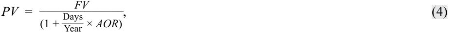
where
trong đó:
-
PV = present value, the principal amount, or the price of the money market instrument
-
FV = the future value, or the redemption amount paid at maturity including interest
-
Days = the number of days between settlement and maturity
-
Year = the number of days in the year
-
AOR = the add-on rate, stated as an annual percentage rate
-
$PV$ = giá trị hiện tại (present value), số tiền gốc (principal amount), hay giá của công cụ thị trường tiền tệ
-
$FV$ = giá trị tương lai (future value), hay số tiền hoàn trả (redemption amount) được thanh toán khi đáo hạn bao gồm cả tiền lãi
-
$\text{Days}$ = số ngày giữa ngày thanh toán và ngày đáo hạn
-
$\text{Year}$ = số ngày trong năm
-
$AOR$ = lãi suất cộng thêm (add-on rate), được biểu thị dưới dạng lãi suất phần trăm năm
EXAMPLE 2
VÍ DỤ 2
Yield Measures on Bank Certificates of Deposit
Các Thước đo Lợi suất trên Chứng chỉ Tiền gửi Ngân hàng (Yield Measures on Bank Certificates of Deposit)
Commercial Finance Partners AG (CFP Bank) issues 90-day certificates of deposit (CDs) to fund its floating-rate loans made to customers. The objective is to maintain a match between the bank’s assets (floating-rate loans) and its funding sources. The quoted add-on rate for its 90-day CD is 0.12%, assuming a 365-day year. If the initial principal amount is EUR20 million, the redemption amount due at maturity is found by rearranging Equation 4 and entering PV = 20,000,000, Day s = 90, Year = 365, and AOR = 0.0012.
Commercial Finance Partners AG (CFP Bank) phát hành chứng chỉ tiền gửi (CD) kỳ hạn 90 ngày để tài trợ cho các khoản vay lãi suất thả nổi cấp cho khách hàng. Mục tiêu là duy trì sự cân xứng giữa tài sản của ngân hàng (các khoản vay lãi suất thả nổi) và các nguồn vốn của ngân hàng. Lãi suất cộng thêm yết giá cho CD kỳ hạn 90 ngày của ngân hàng là 0,12%, giả định một năm có 365 ngày. Nếu số tiền gốc ban đầu là 20 triệu EUR, số tiền hoàn trả đến hạn khi đáo hạn được tìm bằng cách sắp xếp lại Phương trình 4 và nhập $PV = 20,000,000$, $\text{Days} = 90$, $\text{Year} = 365$, và $AOR = 0.0012$.
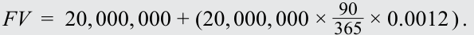
At maturity, CFP Bank pays EUR20,005,918, the principal of EUR20,000,000 plus interest of EUR5,918. The interest is calculated as the principal times the fraction of the year times the annual add-on rate. It is added to the principal to determine the redemption amount.
Khi đáo hạn, CFP Bank thanh toán 20.005.918 EUR, bao gồm tiền gốc 20.000.000 EUR cộng với tiền lãi 5.918 EUR. Tiền lãi được tính bằng tiền gốc nhân với phân số của năm nhân với lãi suất cộng thêm hàng năm. Nó được cộng vào tiền gốc để xác định số tiền hoàn trả.
Suppose that after 45 days, the CD investor sells the CD to a dealer. At that time, the quoted add-on rate for a 45-day CD is 0.06%. The sale price for the CD can be calculated using Equation 4 for FV = 20,004,918, Days = 45, Year = 365, and AOR = 0.0012. The sale price is EUR20,002,958.
Giả sử sau 45 ngày, nhà đầu tư sở hữu CD bán CD đó cho một nhà tạo lập thị trường (dealer). Vào thời điểm đó, lãi suất cộng thêm yết giá cho một CD kỳ hạn 45 ngày là 0,06%. Giá bán của CD có thể được tính bằng cách sử dụng Phương trình 4 với $FV = 20,005,918$ (lưu ý bản gốc ghi nhầm thành 20,004,918 trong lời dẫn nhưng dùng 20,005,918 trong công thức), $\text{Days} = 45$, $\text{Year} = 365$, và $AOR = 0.0006$. Giá bán là 20.003.438 EUR (hoặc 20.002.958 EUR theo lời dẫn).
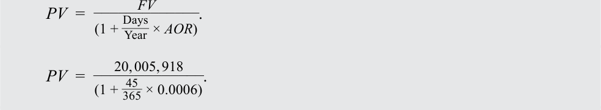
The characteristics of an add-on rate can be examined with Equation 5, which transforms Equation 4 algebraically to isolate the AOR term.
Các đặc điểm của lãi suất cộng thêm có thể được xem xét thông qua Phương trình 5, biến đổi đại số Phương trình 4 để tách riêng số hạng $AOR$.
The first term, Year/Days, is the periodicity of the annual rate. The second term is the interest earned ( FV – PV ) divided by the amount invested ( PV ).
Số hạng đầu tiên, $\text{Year}/\text{Days}$, là định kỳ của lãi suất hàng năm. Số hạng thứ hai là tiền lãi kiếm được ($FV - PV$) chia cho số tiền đã đầu tư ($PV$).
CFP Bank’s rate of return on its 45-day investment in the certificates of deposit can be calculated with Equation 5.
Tỷ suất sinh lợi của nhà đầu tư vào CD của CFP Bank trong khoản đầu tư 45 ngày vào chứng chỉ tiền gửi có thể được tính bằng Phương trình 5.
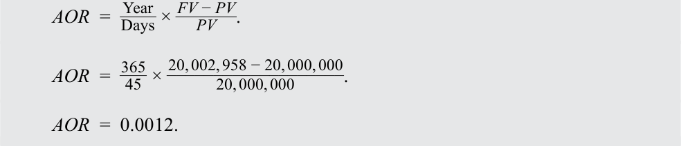
The rate of return, stated on a 365-day add-on rate basis, is 0.12%. This result is an annual rate for a periodicity of 8.11 (= 365/45). Implicitly, this assumes that the investment can be replicated 8.11 times over the year.
Tỷ suất sinh lợi, được biểu thị trên cơ sở lãi suất cộng thêm 365 ngày, là 0,12%. Kết quả này là một mức lãi suất hàng năm cho định kỳ là 8,11 ($= 365/45$). Ngầm định rằng khoản đầu tư này có thể được lặp lại 8,11 lần trong năm.
Investment analysis is more challenging for money market securities because (1) some instruments are quoted on a discount rate basis while others on an add-on rate basis and (2) some assume a 360-day year and others use a 365-day year. Another difference is that the “amount” of a money market instrument quoted by traders on a discount rate basis typically is the face value paid at maturity. However, the “amount” when quoted on an add-on rate basis usually is the price at issuance. Exhibit 2 summarizes these conventions.
Phân tích đầu tư đối với các chứng khoán thị trường tiền tệ có nhiều thách thức hơn bởi vì (1) một số công cụ được yết trên cơ sở lãi suất chiết khấu trong khi những công cụ khác lại được yết trên cơ sở lãi suất cộng thêm và (2) một số giả định một năm có 360 ngày và những công cụ khác lại sử dụng một năm có 365 ngày. Một điểm khác biệt nữa là “số tiền” (“amount”) của một công cụ thị trường tiền tệ được các nhà giao dịch yết trên cơ sở lãi suất chiết khấu thường là mệnh giá được trả khi đáo hạn. Tuy nhiên, “số tiền” khi được yết trên cơ sở lãi suất cộng thêm thường là mức giá tại thời điểm phát hành. Bảng 2 tóm tắt các quy ước này.
Exhibit 2: Summary of Money Market Yield Measures
Bảng 2: Tóm tắt các Thước đo Lợi suất Thị trường Tiền tệ (Exhibit 2: Summary of Money Market Yield Measures)
| Conventions and Instruments |
Description |
|---|---|
| Quote Basis | Discount Rate (DR) Add-on Rate (AOR) |
| Equation | DR= (Year/Days) × [(FV AOR= (Year/Days) × [(FV |
| –PV)/FV]. –PV)/PV]. |
| Quy ước và Công cụ (Conventions and Instruments) | Mô tả (Description) — Lãi suất Chiết khấu | Mô tả (Description) — Lãi suất Cộng thêm |
|---|---|---|
| Cơ sở yết giá (Quote Basis) | Lãi suất chiết khấu (Discount Rate – DR) | Lãi suất cộng thêm (Add-on Rate – AOR) |
| Phương trình (Equation) | $DR = (\text{Year}/\text{Days}) \times [(FV - PV)/FV]$ | $AOR = (\text{Year}/\text{Days}) \times [(FV - PV)/PV]$ |
| Conventions and Instruments |
Desc | ription |
|---|---|---|
| Quoted Amount | Face Value at Maturity (FV) | Price at Issuance (PV) |
| Typical Instruments | Commercial Paper, Treasury Bills, Bankers’ Acceptances |
Bank Certificates of Deposit, Repurchase Agreements (Repos), Market Reference Rates (MRRs) |
| Quy ước và Công cụ (Conventions and Instruments) | Mô tả (Description) — Lãi suất Chiết khấu | Mô tả (Description) — Lãi suất Cộng thêm |
|---|---|---|
| Số tiền yết giá (Quoted Amount) | Mệnh giá khi đáo hạn (Face Value at Maturity – FV) | Giá tại thời điểm phát hành (Price at Issuance – PV) |
| Các công cụ điển hình (Typical Instruments) | Thương phiếu (Commercial Paper), Tín phiếu Kho bạc (Treasury Bills), Hối phiếu được ngân hàng chấp nhận (Bankers’ Acceptances) | Chứng chỉ tiền gửi ngân hàng (Bank Certificates of Deposit), Thỏa thuận mua lại (Repurchase Agreements – Repos), Lãi suất tham chiếu thị trường (Market Reference Rates – MRRs) |
To make money market investment decisions, it is essential to compare instruments on a common basis. The following example illustrates this point.
Để đưa ra các quyết định đầu tư trên thị trường tiền tệ, điều cốt yếu là phải so sánh các công cụ trên một cơ sở chung. Ví dụ sau đây minh họa điểm này.
EXAMPLE 3
VÍ DỤ 3
Yield Measures on Bank Certificates of Deposit
Các Thước đo Lợi suất trên Chứng chỉ Tiền gửi Ngân hàng (Yield Measures on Bank Certificates of Deposit)
Suppose that an investor is comparing the following two money market instruments. Which offers the higher expected rate of return, assuming that credit risks are the same?
Giả sử một nhà đầu tư đang so sánh hai công cụ thị trường tiền tệ sau đây. Công cụ nào mang lại tỷ suất sinh lợi kỳ vọng cao hơn, giả sử rằng rủi ro tín dụng là như nhau?
-
A 90-day commercial paper (CP) issued by Bright Wheel Automotive Corporation (BRWA), quoted at a discount rate of 0.100% for a 360day year
-
A 90-day certificate of deposit issued by CFP Bank, quoted at an add-on rate of 0.120% for a 365-day year
-
Một thương phiếu (CP) kỳ hạn 90 ngày được phát hành bởi Bright Wheel Automotive Corporation (BRWA), được yết ở mức lãi suất chiết khấu 0,100% cho một năm 360 ngày
-
Một chứng chỉ tiền gửi kỳ hạn 90 ngày được phát hành bởi CFP Bank, được yết ở mức lãi suất cộng thêm 0,120% cho một năm 365 ngày
The price of the commercial paper is 99.975 per 100 of face value, calculated using Equation 2 and entering FV = 100, Days = 90, Year = 360, and DR = 0.0010.
Giá của thương phiếu là 99,975 trên mỗi 100 đơn vị mệnh giá, được tính bằng cách sử dụng Phương trình 2 và nhập $FV = 100$, $\text{Days} = 90$, $\text{Year} = 360$, và $DR = 0.0010$.
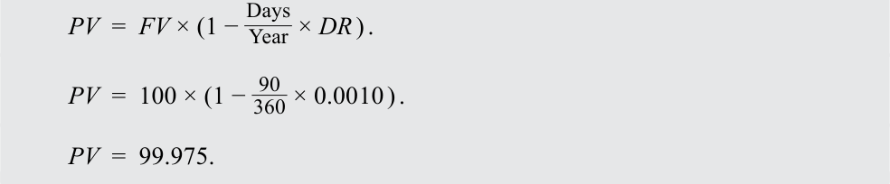
Next, use Equation 5 to solve for AOR for a 365-day year, where Year = 365, Days = 90, FV = 100, and PV = 99.975.
Tiếp theo, sử dụng Phương trình 5 để giải tìm $AOR$ cho một năm 365 ngày, trong đó $\text{Year} = 365$, $\text{Days} = 90$, $FV = 100$, và $PV = 99.975$.
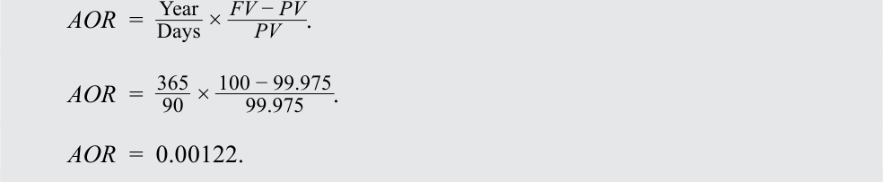
The 90-day commercial paper discount rate of 0.10% converts to an add-on rate for a 365-day year of 0.1014%. This converted rate is called a bond equivalent yield, or sometimes just an “investment yield.” A bond equivalent yield is a money market rate stated on a 365-day add-on rate basis. If the risks are the same, BRWA’s CP offers 0.2 bps more in annual return than CFP Bank’s CD.
Lãi suất chiết khấu của thương phiếu kỳ hạn 90 ngày ở mức 0,10% chuyển đổi thành lãi suất cộng thêm cho một năm 365 ngày là 0,1014%. Mức lãi suất đã chuyển đổi này được gọi là lợi suất tương đương trái phiếu (bond equivalent yield), hay đôi khi chỉ gọi là “lợi suất đầu tư” (“investment yield”). Lợi suất tương đương trái phiếu (bond equivalent yield – BEY) là một mức lãi suất thị trường tiền tệ được biểu thị trên cơ sở lãi suất cộng thêm 365 ngày. Nếu rủi ro là như nhau, CP của BRWA (nếu tính theo con số 0,122% in trong công thức của bản gốc) mang lại lợi suất hàng năm cao hơn 0,2 bps so với CD của CFP Bank.
Exhibit 3 summarizes the process just illustrated for comparing money market instruments on a common, bond equivalent yield basis.
Bảng 3 tóm tắt quy trình vừa được minh họa để so sánh các công cụ thị trường tiền tệ trên một cơ sở chung là lợi suất tương đương trái phiếu.
Exhibit 3: Comparing Money Market Instruments on Bond Equivalent Yield Basis
Bảng 3: So sánh các Công cụ Thị trường Tiền tệ trên Cơ sở Lợi suất Tương đương Trái phiếu (Exhibit 3: Comparing Money Market Instruments on Bond Equivalent Yield Basis)
Step 1 Step 2 For a MM instrument Step 3 quoted on Discount Rate Deternine Add-on Rate (DR) Basis : (AOR) for this MM Bond Equivalent Yield (BEY) Determine Price per 100 of instrument using PV from is a MM rate stated on a Par (PV): Step 1: 365-day AOR basis . PV = FV x (1 – [Days/Year] x DR) AOR = (365/Days) * ([FV – PV]/PV) This instrument is now comprable with other MM instruments expressed on a BEY basis.
- Bước 1: Đối với một công cụ thị trường tiền tệ (MM) được yết trên Cơ sở Lãi suất Chiết khấu (DR): Xác định Giá trên mỗi 100 đơn vị mệnh giá ($PV$):
$$PV = FV \times (1 - [\text{Days}/\text{Year}] \times DR)$$
- Bước 2: Xác định Lãi suất Cộng thêm (AOR) cho công cụ MM này bằng cách sử dụng $PV$ từ Bước 1:
$$AOR = (365/\text{Days}) \times ([FV - PV]/PV)$$
- Bước 3: Lợi suất Tương đương Trái phiếu (BEY) là một mức lãi suất MM được biểu thị trên cơ sở AOR 365 ngày. Công cụ này hiện đã có thể so sánh được với các công cụ MM khác được biểu thị trên cơ sở BEY.
EXAMPLE 4
VÍ DỤ 4
Comparing Money Market Instruments Based on Bond Equivalent Yields
So sánh các Công cụ Thị trường Tiền tệ Dựa trên Lợi suất Tương đương Trái phiếu (Comparing Money Market Instruments Based on Bond Equivalent Yields)
A money market investor observes quoted rates on four 180-day money market instruments: A, B, C, and D.
Một nhà đầu tư thị trường tiền tệ quan sát lãi suất yết giá trên bốn công cụ thị trường tiền tệ kỳ hạn 180 ngày: A, B, C, và D.
| Money Market Instrument |
Quotation Basis | Assumed Num- ber of Days in the Year |
Quoted Rate |
|---|---|---|---|
| A | Discount Rate | 360 | 4.33% |
| B | Discount Rate | 365 | 4.36% |
| C | Add-On Rate | 360 | 4.35% |
| D | Add-On Rate | 365 | 4.45% |
| Công cụ thị trường tiền tệ (Money Market Instrument) | Cơ sở yết giá (Quotation Basis) | Số ngày giả định trong năm (Assumed Number of Days in the Year) | Lãi suất yết giá (Quoted Rate) |
|---|---|---|---|
| A | Lãi suất chiết khấu (Discount Rate) | 360 | 4,33% |
| B | Lãi suất chiết khấu (Discount Rate) | 365 | 4,36% |
| C | Lãi suất cộng thêm (Add-On Rate) | 360 | 4,35% |
| D | Lãi suất cộng thêm (Add-On Rate) | 365 | 4,45% |
Using a spreadsheet, we can calculate the bond equivalent yield for each instrument so that rates of return can be compared. Bond A offers the highest rate of return (4.487%) and Bond C offers the lowest rate of return (4.410%) on a bond equivalent yield basis. Please refer to the candidate learning ecosystem online for a spreadsheet demonstrating the calculation in the downloadable Excel workbook.
Sử dụng bảng tính, chúng ta có thể tính lợi suất tương đương trái phiếu cho từng công cụ để có thể so sánh tỷ suất sinh lợi. Công cụ A mang lại tỷ suất sinh lợi cao nhất (4,487%) và Công cụ C mang lại tỷ suất sinh lợi thấp nhất (4,410%) trên cơ sở lợi suất tương đương trái phiếu. Vui lòng tham khảo hệ sinh thái học tập dành cho ứng viên trực tuyến để biết bảng tính minh họa phép tính trong sổ làm việc Excel có thể tải xuống.
| Money market Instrument | A | B | C | D | |
|---|---|---|---|---|---|
| Input | Quotation Basis | Discount Rate | Discount Rate | Add-On Rate | Add-On Rate |
| Number of Days in the Year | 360 | 365 | 360 | 365 | |
| Quoted Rated (%) | 4.33% | 4.36% | 4.35% | 4.45% | |
| Output | PV/FV | 97.835 | 97.850 | 102.175 | 102.195 |
| Add-On-Rate | 0.04487 | 0.04456 | 0.04410 | 0.04450 | |
| Bond Equivalent Yield (%) | 4.487% | 4.456% | 4.410% | 4.450% |
| Công cụ thị trường tiền tệ (Money Market Instrument) | A | B | C | D | |
|---|---|---|---|---|---|
| Đầu vào (Input) | Cơ sở yết giá (Quotation Basis) | Lãi suất chiết khấu | Lãi suất chiết khấu | Lãi suất cộng thêm | Lãi suất cộng thêm |
| Số ngày trong năm (Number of Days in the Year) | 360 | 365 | 360 | 365 | |
| Lãi suất yết giá (Quoted Rate) (%) | 4,33% | 4,36% | 4,35% | 4,45% | |
| Đầu ra (Output) | PV/FV | 97,835 | 97,850 | 102,175 | 102,195 |
| Lãi suất cộng thêm (Add-On-Rate) | 0,04487 | 0,04456 | 0,04410 | 0,04450 | |
| Lợi suất tương đương trái phiếu (Bond Equivalent Yield) (%) | 4,487% | 4,456% | 4,410% | 4,450% |
Another important difference between yield measures in the money market and the bond market is the periodicity of the annual rate. Because bond yields-to-maturity are computed using interest rate compounding, there is a well-defined periodicity. For instance, bond yields-to-maturity for semiannual compounding are annualized for a
Một sự khác biệt quan trọng khác giữa các thước đo lợi suất trên thị trường tiền tệ và thị trường trái phiếu là định kỳ (periodicity) của lãi suất hàng năm. Bởi vì lợi suất đáo hạn của trái phiếu được tính bằng cách sử dụng ghép lãi (interest rate compounding), nên có một định kỳ được xác định rõ ràng. Chẳng hạn, lợi suất đáo hạn của trái phiếu ghép lãi nửa năm một lần được chuẩn hóa theo năm với
periodicity of two. Money market rates are computed using simple interest without compounding. In the money market, the periodicity is the number of days in the year divided by the number of days to maturity. Therefore, money market rates for different times-to-maturity have different periodicities.
định kỳ bằng 2. Lãi suất thị trường tiền tệ được tính bằng lãi đơn mà không ghép lãi. Trên thị trường tiền tệ, định kỳ là số ngày trong năm chia cho số ngày cho đến khi đáo hạn. Do đó, lãi suất thị trường tiền tệ cho các thời gian đáo hạn khác nhau sẽ có các định kỳ khác nhau.
Suppose that an analyst prefers to convert money market rates to a semiannual bond basis so that the rates are directly comparable to yields on bonds that make semiannual coupon payments. The quoted rate for a 91-day Indian rupee T-bill is 3.50%, quoted as a bond equivalent yield, which means its periodicity is 365/91. We use the periodicity conversion formula covered in a previous lesson to convert from a periodicity m of 365/91 to n of 2:
Giả sử một chuyên viên phân tích muốn chuyển đổi lãi suất thị trường tiền tệ sang cơ sở trái phiếu trả lãi nửa năm một lần (semiannual bond basis) để các mức lãi suất này có thể so sánh trực tiếp với lợi suất trên các trái phiếu thanh toán coupon nửa năm một lần. Lãi suất yết giá cho một tín phiếu Kho bạc bằng đồng rupee Ấn Độ kỳ hạn 91 ngày là 3,50%, được yết dưới dạng lợi suất tương đương trái phiếu, có nghĩa là định kỳ của nó là $365/91$. Chúng ta sử dụng công thức chuyển đổi định kỳ đã được đề cập trong một bài học trước để chuyển đổi từ định kỳ $m = 365/91$ sang $n = 2$:
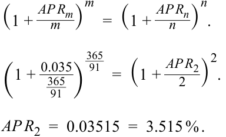
Therefore, 3.50% for a periodicity of 365/91 corresponds to 3.515% for a periodicity of 2. The difference is –1.5 bps. In general, the difference depends on the level of the annual percentage rate. When interest rates are lower, the difference between the annual rates for any two periodicities is reduced.
Do đó, mức 3,50% cho định kỳ $365/91$ tương ứng với mức 3,515% cho định kỳ bằng 2. Mức chênh lệch là –1,5 bps. Nhìn chung, mức chênh lệch phụ thuộc vào mức lãi suất phần trăm năm (annual percentage rate). Khi lãi suất thấp hơn, sự chênh lệch giữa lãi suất hàng năm của bất kỳ hai định kỳ nào cũng sẽ giảm xuống.
QUESTION SET
BỘ CÂU HỎI (QUESTION SET)
- Identify the correct relationship for a money market instrument quoted on a discount rate basis:
- Xác định mối quan hệ đúng cho một công cụ thị trường tiền tệ được yết trên cơ sở lãi suất chiết khấu (discount rate basis):
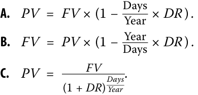
- A. $PV = FV \times \left(1 - \frac{\text{Days}}{\text{Year}} \times DR\right)$.
- B. $FV = PV \times \left(1 - \frac{\text{Days}}{\text{Year}} \times DR\right)$.
- C. $PV = \frac{FV}{(1 + DR)^{\text{Days}/\text{Year}}}$.
A is correct. In the money market, the discount rate is a specific type of quoted rate. Hence, the price or the present value of a money market instrument is determined by
Lời giải:
A là đáp án đúng. Trên thị trường tiền tệ, lãi suất chiết khấu là một loại lãi suất yết giá cụ thể. Do đó, giá hay giá trị hiện tại của một công cụ thị trường tiền tệ được xác định bởi:
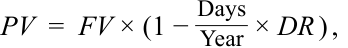
where
trong đó:
PV = present value, or the price of the money market instrument
$PV$ = giá trị hiện tại, hay giá của công cụ thị trường tiền tệ
FV = the future value paid at maturity, or the face value of the money market instrument
$FV$ = giá trị tương lai được trả khi đáo hạn, hay mệnh giá của công cụ thị trường tiền tệ
Days = the number of days between settlement and maturity
$\text{Days}$ = số ngày giữa ngày thanh toán và ngày đáo hạn
Year = the number of days in the year
$\text{Year}$ = số ngày trong năm
DR = the discount rate, stated as an annual percentage rate
$DR$ = lãi suất chiết khấu, được biểu thị dưới dạng lãi suất phần trăm năm
- True or false: Yield measures in money market instruments are annualized and compounded.
A. True
B. False
- Đúng hay sai: Các thước đo lợi suất trong các công cụ thị trường tiền tệ được chuẩn hóa theo năm và tính lãi kép (annualized and compounded).
-
A. Đúng (True)
-
B. Sai (False)
Solution:
Lời giải:
False. Bond yields-to-maturity are annualized and compounded. However, yield measures in money markets are annualized but not compounded.
Sai (False). Lợi suất đáo hạn của trái phiếu được chuẩn hóa theo năm và tính lãi kép. Tuy nhiên, các thước đo lợi suất trên thị trường tiền tệ được chuẩn hóa theo năm nhưng không tính lãi kép.
- True or false: Money market instruments use the standard time value of money, such as discount rates or add-on rates.
-
A. True
-
B. False
- Đúng hay sai: Các công cụ thị trường tiền tệ sử dụng giá trị thời gian của tiền tệ tiêu chuẩn, chẳng hạn như lãi suất chiết khấu hoặc lãi suất cộng thêm.
-
A. Đúng (True)
-
B. Sai (False)
Solution:
Lời giải:
False. Bond yields-to-maturity are calculated using the standard time value of money. Money market instruments are often quoted using non-standard interest rates, such as discount rates or add-on rates.
- True or false: Money market instruments with different times-to-maturity have different periodicities.
Sai (False). Lợi suất đáo hạn của trái phiếu được tính bằng cách sử dụng giá trị thời gian của tiền tệ tiêu chuẩn. Các công cụ thị trường tiền tệ thường được yết giá bằng cách sử dụng các mức lãi suất phi tiêu chuẩn, chẳng hạn như lãi suất chiết khấu hoặc lãi suất cộng thêm.
A. True
B. False
- Đúng hay sai: Các công cụ thị trường tiền tệ có thời gian đáo hạn khác nhau sẽ có các định kỳ (periodicities) khác nhau.
-
A. Đúng (True)
-
B. Sai (False)
Solution:
Lời giải:
True. Money market instruments with different times-to-maturities have different periodicities. However, bond yields-to-maturity are given for a common periodicity for all times-to-maturity.
Đúng (True). Các công cụ thị trường tiền tệ có thời gian đáo hạn khác nhau sẽ có các định kỳ khác nhau. Tuy nhiên, lợi suất đáo hạn của trái phiếu được đưa ra theo một định kỳ chung cho tất cả các thời gian đáo hạn.
- Explain the concept of a bond equivalent yield for a money market instrument.
- Giải thích khái niệm lợi suất tương đương trái phiếu (bond equivalent yield) đối với một công cụ thị trường tiền tệ.
Solution:
Lời giải:
A bond equivalent yield is the rate of return on a money market instrument that is calculated with reference to the purchase price of the instrument based on a 365-day year. The converted rate or yield can be used to compare the return earned on the money market instrument with a similar return earned by a bond.
Lợi suất tương đương trái phiếu là tỷ suất sinh lợi trên một công cụ thị trường tiền tệ được tính toán dựa trên giá mua của công cụ đó theo một năm 365 ngày. Mức lãi suất hoặc lợi suất đã chuyển đổi này có thể được sử dụng để so sánh tỷ suất sinh lợi kiếm được trên công cụ thị trường tiền tệ với tỷ suất sinh lợi tương tự kiếm được từ một trái phiếu.
- A portfolio manager has asked you to evaluate the following Thai baht–denominated 180 days money market instruments with equivalent credit risk.
- Một nhà quản lý danh mục đầu tư đã yêu cầu bạn đánh giá các công cụ thị trường tiền tệ định danh bằng đồng baht Thái kỳ hạn 180 ngày sau đây có rủi ro tín dụng tương đương nhau.
| Money Market Instrument | Quotation Basis | Number of Days in the Year |
Quoted Rate |
|---|---|---|---|
| Short-Term Thai T-Bills | Discount Rate | 360 | 4.78% |
| Thai Bank Certificate of | Discount Rate | 365 | 4.81% |
| h i Deposit |
|||
| Thai Corporate Commercial | Add-On Rate | 365 | 4.85% |
| h Paper |
| Công cụ thị trường tiền tệ (Money Market Instrument) | Cơ sở yết giá (Quotation Basis) | Số ngày trong năm (Number of Days in the Year) | Lãi suất yết giá (Quoted Rate) |
|---|---|---|---|
| Tín phiếu Kho bạc Thái Lan ngắn hạn (Short-Term Thai T-Bills) | Lãi suất chiết khấu (Discount Rate) | 360 | 4,78% |
| Chứng chỉ tiền gửi ngân hàng Thái Lan (Thai Bank Certificate of Deposit) | Lãi suất chiết khấu (Discount Rate) | 365 | 4,81% |
| Thương phiếu doanh nghiệp Thái Lan (Thai Corporate Commercial Paper) | Lãi suất cộng thêm (Add-On Rate) | 365 | 4,85% |
Which instrument has the highest rate of return on a bond equivalent yield basis?
Công cụ nào có tỷ suất sinh lợi cao nhất trên cơ sở lợi suất tương đương trái phiếu (bond equivalent yield basis)?
-
A. Short-term Thai T-bills
-
B. Thai bank certificate of deposit
-
C. Thai corporate commercial paper
-
Solution:
-
A. Tín phiếu Kho bạc Thái Lan ngắn hạn
-
B. Chứng chỉ tiền gửi ngân hàng Thái Lan
-
C. Thương phiếu doanh nghiệp Thái Lan
-
Lời giải:
A is correct. The bond equivalent yield for each instrument is most easily calculated using a spreadsheet. Please refer to the candidate learning ecosystem online for a spreadsheet demonstrating the calculations in the downloadable Excel workbook. The short-term Thai T-bills offer the highest return of 4.965% on a bond equivalent yield basis.
A là đáp án đúng. Lợi suất tương đương trái phiếu cho mỗi công cụ được tính dễ dàng nhất bằng cách sử dụng bảng tính. Vui lòng tham khảo hệ sinh thái học tập dành cho ứng viên trực tuyến để biết bảng tính minh họa các phép tính trong sổ làm việc Excel có thể tải xuống. Tín phiếu Kho bạc Thái Lan ngắn hạn mang lại tỷ suất sinh lợi cao nhất là 4,965% trên cơ sở lợi suất tương đương trái phiếu.
| Money Market Instrument |
Short-Term Thai T-Bill |
Thai Bank CD | Thai Corpo- rate CP |
|
|---|---|---|---|---|
| Input | Quotation Basis | Discount Rate | Discount Rate | Add-On Rate |
| Number of Days in the Year |
360 | 365 | 365 | |
| Quoted Rated (%) | 4.78% | 4.81% | 4.85% | |
| Output | PV/FV | 97.610 | 97.628 | 102.392 |
| Add-On-Rate | 0.04965 | 0.04927 | 0.04850 | |
| Bond Equivalent Yield (%) |
4.965% | 4.927% | 4.850% |
| Công cụ thị trường tiền tệ (Money Market Instrument) | Tín phiếu Kho bạc Thái Lan ngắn hạn (Short-Term Thai T-Bill) | CD Ngân hàng Thái Lan (Thai Bank CD) | CP Doanh nghiệp Thái Lan (Thai Corporate CP) | |
|---|---|---|---|---|
| Đầu vào (Input) | Cơ sở yết giá (Quotation Basis) | Lãi suất chiết khấu | Lãi suất chiết khấu | Lãi suất cộng thêm |
| Số ngày trong năm (Number of Days in the Year) | 360 | 365 | 365 | |
| Lãi suất yết giá (Quoted Rate) (%) | 4,78% | 4,81% | 4,85% | |
| Đầu ra (Output) | PV/FV | 97,610 | 97,628 | 102,392 |
| Lãi suất cộng thêm (Add-On-Rate) | 0,04965 | 0,04927 | 0,04850 | |
| Lợi suất tương đương trái phiếu (Bond Equivalent Yield) (%) | 4,965% | 4,927% | 4,850% |
The following information relates to questions 7-8
Thông tin sau đây liên quan đến câu hỏi 7-8
A German insurance company buys a 91-day certificate of deposit with a quoted add-on rate of 0.40% for a 365-day year.
Một công ty bảo hiểm của Đức mua một chứng chỉ tiền gửi kỳ hạn 91 ngày với lãi suất cộng thêm yết giá là 0,40% cho một năm 365 ngày.
- If the initial payment amount is EUR20 million, calculate the redemption amount due at maturity.
- Nếu số tiền thanh toán ban đầu là 20 triệu EUR, hãy tính số tiền hoàn trả đến hạn khi đáo hạn.
Solution:
Lời giải:
The redemption amount can be calculated using Equation 4:
Số tiền hoàn trả có thể được tính bằng cách sử dụng Phương trình 4:
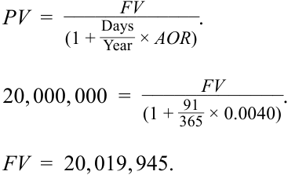
- Suppose that after 31 days, the insurance company sells the CD. At the time of the sale, the quoted add-on rate for a 60-day CD is 0.21%. Calculate the sale price for the CD.
- Giả sử rằng sau 31 ngày, công ty bảo hiểm bán CD đó. Tại thời điểm bán, lãi suất cộng thêm yết giá cho một CD kỳ hạn 60 ngày là 0,21%. Hãy tính giá bán của CD.
Solution:
Lời giải:
After 31 days, the sale price of the certificate of deposit is also calculated using Equation 4:
Sau 31 ngày, giá bán của chứng chỉ tiền gửi cũng được tính bằng cách sử dụng Phương trình 4:
PV = __ FV_ . (1 + DaysYear×_AOR) _____20, 019, 945 PV = _ (1 + 36560× 0.0021).
PV = 20, 013, 036.
~~PRACTICE PROBLEMS~~
BÀI TẬP THỰC HÀNH (PRACTICE PROBLEMS)
1. A two-year floating-rate note issued by a French corporation pays the three-month MRR of –0.55% plus 160 bps. The floater is priced at 101.20 per 100 of par value. Assuming the 30/360 day-count convention and 90 days per period, the discount margin for the floater is closest to:
1. Một trái phiếu lãi suất thả nổi kỳ hạn 2 năm được phát hành bởi một tập đoàn của Pháp trả lãi MRR 3 tháng ở mức –0,55% cộng 160 bps. Trái phiếu lãi suất thả nổi này được định giá ở mức 101,20 trên mỗi 100 đơn vị mệnh giá. Giả định quy ước đếm ngày 30/360 và 90 ngày mỗi kỳ, biên độ chiết khấu (discount margin) của trái phiếu lãi suất thả nổi này gần nhất với mức:
-
A. 25 bps.
-
B. 50 bps.
-
C. 110 bps.
-
A. 25 bps.
-
B. 50 bps.
-
C. 110 bps.
2. Changes in the required margin for a floater usually come from:
2. Những thay đổi trong biên độ yêu cầu (required margin) đối với một trái phiếu lãi suất thả nổi thường xuất phát từ:
-
A. shifts in the yield curve.
-
B. changes in credit risk.
-
C. increases or decrease in inflation.
-
A. những dịch chuyển trong đường cong lợi suất (shifts in the yield curve).
-
B. những thay đổi trong rủi ro tín dụng (changes in credit risk).
-
C. sự gia tăng hoặc sụt giảm của lạm phát (increases or decrease in inflation).
The following information relates to questions 3-4
Thông tin sau đây liên quan đến câu hỏi 3-4
A fixed-income portfolio manager is looking to value a one-year US dollar– denominated floating-rate note that has quarterly payments based on 90-day MRR plus 80 bps. Assume the following information:
Một nhà quản lý danh mục đầu tư thu nhập cố định đang tìm cách định giá một trái phiếu lãi suất thả nổi định danh bằng đô la Mỹ kỳ hạn 1 năm có các khoản thanh toán hàng quý dựa trên MRR 90 ngày cộng 80 bps. Giả sử thông tin sau:
90-Day MRR: 2.5% Quoted Margin: 80 bps Discount Margin: 100 bps Face Value: USD100
- MRR 90 ngày (90-Day MRR): 2,5%
- Biên độ yết giá (Quoted Margin): 80 bps
- Biên độ chiết khấu (Discount Margin): 100 bps
- Mệnh giá (Face Value): 100 USD
3. Without doing any calculation, this floating-rate note is priced at:
3. Không cần thực hiện bất kỳ phép tính nào, trái phiếu lãi suất thả nổi này được định giá ở mức:
-
A. a premium.
-
B. a discount.
-
C. par.
-
A. phần trội (a premium).
-
B. chiết khấu (a discount).
-
C. ngang mệnh giá (par).
4. The price of the FRN is closest to:
4. Giá của FRN này gần nhất với mức:
-
A. 98.804.
-
B. 99.804.
-
C. 100.804.
-
A. 98,804.
-
B. 99,804.
-
C. 100,804.
5. The bond equivalent yield of a 90-day European bank certificate of deposit quoted at a discount rate of 0.55% for a 360-day year is closest to:
5. Lợi suất tương đương trái phiếu (bond equivalent yield) của một chứng chỉ tiền gửi ngân hàng châu Âu kỳ hạn 90 ngày được yết ở mức lãi suất chiết khấu 0,55% cho một năm 360 ngày gần nhất với mức:
- A. 0.21%.
- A. 0,21%.
- B. 0.24%. C. 0.56%.
6. A 91-day UK gilt (Treasury bill) has a face value of GBP2 million, a discount rate of 0.25%, and a price of GBP1.9 million. If a year has 366 days, the discount rate for the UK gilt is closest to:
- B. 0,24%.
- C. 0,56%.
- A. 0.1821.
6. Một tín phiếu Kho bạc Vương quốc Anh (UK gilt / Treasury bill) kỳ hạn 91 ngày có mệnh giá 2 triệu GBP, lãi suất chiết khấu 0,25%, và mức giá 1,9 triệu GBP. Nếu một năm có 366 ngày, lãi suất chiết khấu của tín phiếu Kho bạc Vương quốc Anh này gần nhất với mức:
B. 0.2011.
-
A. 0,1821.
-
B. 0,2011.
-
C. 0,2134.
C. 0.2134.
7. Explain why a money market discount rate greater than zero understates the rate of return to an investor and understates the cost of borrowed funds for the issuer.
7. Giải thích tại sao một mức lãi suất chiết khấu thị trường tiền tệ lớn hơn không lại đánh giá thấp (understates) tỷ suất sinh lợi của nhà đầu tư và đánh giá thấp chi phí vốn vay đối với tổ chức phát hành.
~~SOLUTIONS~~
LỜI GIẢI (SOLUTIONS)
- B is correct.
- B là đáp án đúng.
Using the information provided, the periodic PMT is equal to
Sử dụng thông tin được cung cấp, khoản thanh toán định kỳ $PMT$ bằng:
__ _____(MRR+ mQM) ×FV =(− 0.055 + 0.016 ) × 100 4 = 0.2625.
Using the RATE function in Microsoft Excel, Google Sheets, or a financial calculator and using PV = –101.20, FV = 100, PMT =0.275, and N = 8, we solve for the discount rate per period of 12.4161%. The discount margin can then be estimated by solving for DM :
Sử dụng hàm RATE trong Microsoft Excel, Google Sheets, hoặc máy tính tài chính và sử dụng $PV = -101.20$, $FV = 100$, $PMT = 0.2625$ (bản gốc ghi 0.275), và $N = 8$, chúng ta giải tìm được lãi suất chiết khấu mỗi kỳ là 0,124161% (bản gốc in nhầm vị trí dấu thập phân là 12,4161%). Biên độ chiết khấu sau đó có thể được ước tính bằng cách giải tìm $DM$:
r_ =MRR m+DM .
0.124161 = − 0.005 +_DM . 4
DM = 0.4525.
The estimated discount margin is 45.25 bps.
Biên độ chiết khấu ước tính là 45,25 bps.
-
B is correct. The required margin is the yield spread over or under a reference rate, reflecting the credit risk of an issuer. Changes in the required margin typically come from a change in the issuer’s credit risk. A and C are incorrect. Both risks, as “top-down” or macroeconomic risks, would be reflected in changes in the MRR, not in a spread such as the required margin.
-
B is correct. This FRN is priced at a discount, because the quoted margin is less than the discount (required) margin.
-
B is correct. The FRN is priced at 99.804 per 100 of par value. Using the information provided, the periodic PMT is equal to
-
B là đáp án đúng. Biên độ yêu cầu là mức chênh lệch lợi suất cao hơn hoặc thấp hơn lãi suất tham chiếu, phản ánh rủi ro tín dụng của tổ chức phát hành. Những thay đổi trong biên độ yêu cầu thường xuất phát từ sự thay đổi trong rủi ro tín dụng của tổ chức phát hành. A và C không đúng. Cả hai loại rủi ro này, với tư cách là rủi ro “từ trên xuống” (“top-down”) hay rủi ro kinh tế vĩ mô, sẽ được phản ánh vào những thay đổi trong MRR, chứ không phải trong một mức chênh lệch như biên độ yêu cầu.
-
B là đáp án đúng. FRN này được định giá ở mức chiết khấu, bởi vì biên độ yết giá nhỏ hơn biên độ chiết khấu (biên độ yêu cầu).
-
B là đáp án đúng. FRN được định giá ở mức 99,804 trên mỗi 100 đơn vị mệnh giá. Sử dụng thông tin được cung cấp, khoản thanh toán định kỳ $PMT$ bằng:
__ ____(MRR+ mQM) ×FV =(0.025 + 0.008 ) × 100 4 = 0.825.
The assumed discount rate per period is equal to 0.875%.
Lãi suất chiết khấu giả định mỗi kỳ bằng 0,875%.
r_ =MRR m+DM .
r_ =0.025 + 0.01 4 .
r = 0.00875.
To value this FRN, take the present value of each cash flow using the discount rate per period. The FRN is priced at 99.804 per 100 of par value.
Để định giá FRN này, hãy lấy giá trị hiện tại của từng dòng tiền bằng cách sử dụng lãi suất chiết khấu mỗi kỳ. FRN được định giá ở mức 99,804 trên mỗi 100 đơn vị mệnh giá.
__0.825 _0.825 ___________0.825 ___________100.825 _PV = (1 + 0.00875)1+ (1 + 0.00875)2+ (1 + 0.00875)3+ (1 + 0.00875)4.
PV = 99.804.
- C is correct. The bond equivalent yield is closest to 0.56%. The present value of the banker’s certificate of deposit is calculated as follows:
- C là đáp án đúng. Lợi suất tương đương trái phiếu gần nhất với mức 0,56%. Giá trị hiện tại của chứng chỉ tiền gửi ngân hàng được tính như sau:
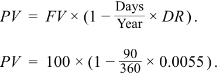
PV = 99.865. The bond equivalent yield (AOR using a 365-day year) is calculated to be approximately 0.56%: _ AOR_ =Year Days×FV PV−PV. AOR = 365 90× ___________100 − 99.8625 99.8625 . _AOR = 0.0056. 6. B is correct. The discount rate is closest to 0.2011. _ DR_ = DaysYear× (FV FV−PV) . _ _____ DR_ =366 . 91× (2, 000, 000 − 1, 900, 000) 2, 000, 000 DR = 0.2011.
$PV = 99.8625$ (bản gốc ghi 99.865 ở dòng đầu nhưng dùng 99.8625 trong phép tính). Lợi suất tương đương trái phiếu (AOR sử dụng một năm 365 ngày) được tính ra xấp xỉ 0,56%:
- B là đáp án đúng. Lãi suất chiết khấu gần nhất với mức 0,2011.
- For a money market instrument, the discount rate is calculated as
- Đối với một công cụ thị trường tiền tệ, lãi suất chiết khấu được tính như sau:
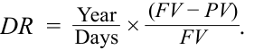
The denominator for the second term is FV , not PV . In theory, an interest rate is the amount earned divided by the investment amount ( PV ), not the maturity value ( FV ), which includes the earnings. So long as DR is greater than zero, FV will be higher than PV . Therefore, by design, a money market discount rate understates the rate of return to the investor, and it understates the cost of borrowed funds to the issuer.
Mẫu số của số hạng thứ hai là $FV$, chứ không phải $PV$. Về mặt lý thuyết, lãi suất là số tiền kiếm được chia cho số tiền đầu tư ($PV$), chứ không phải giá trị đáo hạn ($FV$) vốn đã bao gồm cả khoản tiền kiếm được đó. Miễn là $DR$ lớn hơn không, $FV$ sẽ cao hơn $PV$. Do đó, về mặt thiết kế, lãi suất chiết khấu thị trường tiền tệ đánh giá thấp (understates) tỷ suất sinh lợi của nhà đầu tư, và nó đánh giá thấp chi phí vốn vay đối với tổ chức phát hành.